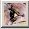
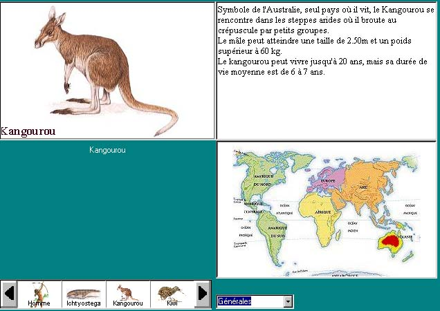
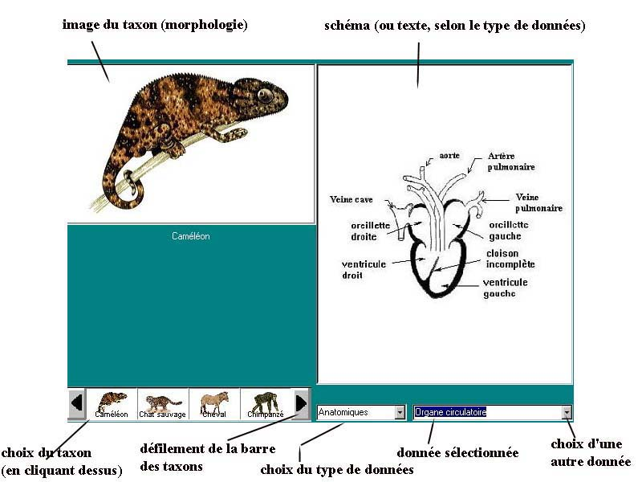
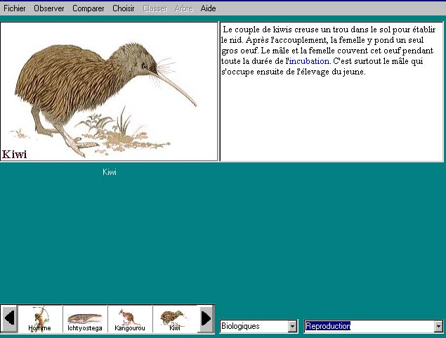

Observer
Observer
Activité accessible à tout moment
à partir du menu général et de l'icône 
Données disponibles
|  |
Données générales (texte + carte de
répartition)
Cliquer
sur l'imagette |
|  |
Données anatomiques et morphologiques (image du taxon
et schémas)
Cliquer sur l'imagette |
|  |
Données biologiques (texte)
Cliquer
sur l'imagette |
Exemple des Vertébrés
Données générales
- texte
présentant quelques caractéristiques du taxon (taille,
poids,...)
- carte
de répartition du taxon
Données anatomiques
- tégument
: coupe de peau, permettant de repérer le type de formations
cutanées
(poils, plumes, écailles,...) et leur origine (dermique ou
épidermique), ainsi que la présence ou non de
kératine
- organe
circulatoire
: coupe de coeur en vue ventrale, permettant de repérer le
nombre de
cavités du coeur et l'existence de cloisons inter auriculaires
ou inter
ventriculaires, complètes ou incomplètes
- organe
respiratoire : coupe de l'appareil respiratoire (depuis la
trachée pour les pulmonés)
- organe
locomoteur
: organisation du squelette du membre antérieur pair, permettant
de
repérer le nombre de pièces basales, la présence
de doigts,...
- annexes
embryonnaires :
coupes d'un embryon entouré de ses annexes embryonnaires,
permettant de
repérer la présence ou non d'un amnios (cavité
amniotique), d'un
placenta, d'une vésicule vitelline
- crâne
: vue latérale et vue en coupe longitudinale du crâne,
permettant de
repérer la présence ou non de mâchoires, de
fenêtres mandibulaires ou
temporales, de choanes
- squelette
: vue générale du squelette (non légendée)
Données biologiques
- milieu
de vie : texte court
- régime
alimentaire: le nom de ce régime n'est pas fourni dans
le texte
- structure
sociale: texte précisant le mode de vie sociale du
taxon (solitaire, grégaire,...)
- régulation
de la température : texte court
- reproduction
: texte précisant quelques caractéristiques de la
reproduction du taxon
(fécondation interne ou externe, oviparité ou
viviparité, soins aux
jeunes, allaitement)
Dans les collections comportant des fossiles, un bouton "Organiser"
donne accès à une activité où les taxons
sont placés sur une échelle
des temps géologiques et peuvent être colorés
suivant leurs états de
caractère.
{kind=link}
{kind=link}
{kind=link}